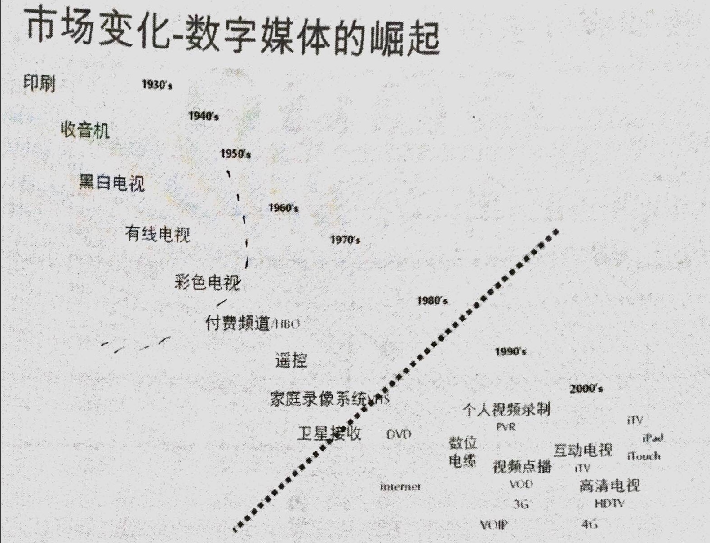
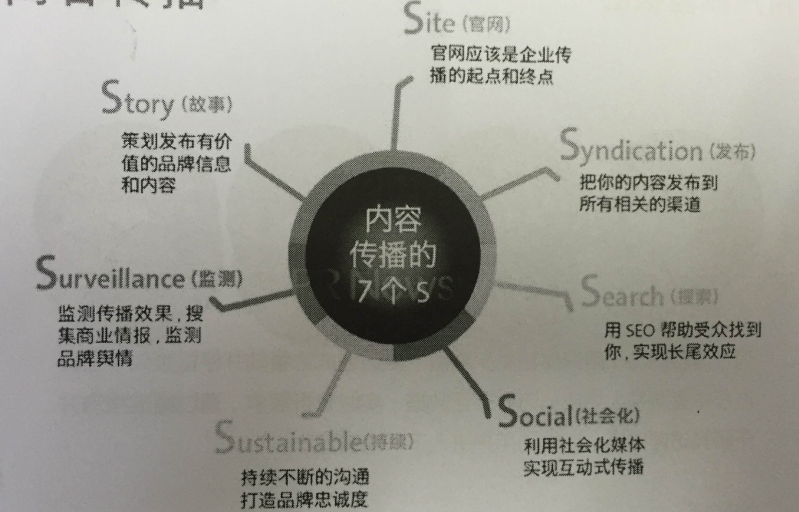
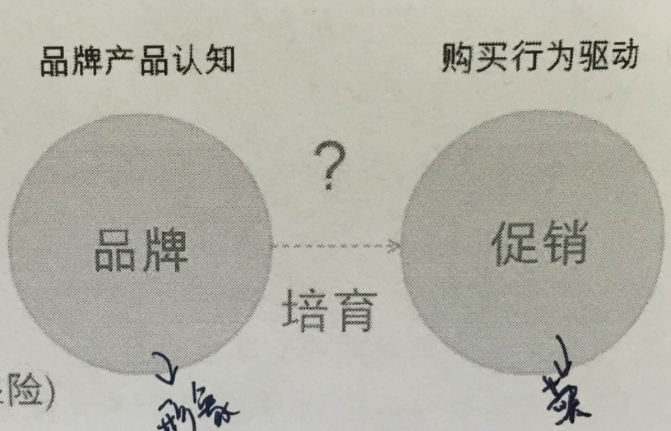

数字广告新时代 消费者和营销传播的变革
广告的定义
- 广告是为了某种特定的需要，通过一定形式的媒体（报纸、杂志、电视、广播、户外广告牌、直邮、网站、博客、短信），公开而广泛地向公众传递信息的宣传手段。
- 目的在于告知、鼓励或者说服目标受众改变其认知或行为。
- 商业广告，是指以盈利为目的广告，通常是商品生产者、经营者和消费者之间沟通信息的重要手段，企业占领市场、推销产品、提供劳务的重要形式，主要目的是扩大经济效益。

营销传播时代的转变
- 1G: 大众时代
- 2G: 整合时代
- 3G: 对话时代
『大众』式营销的本质
本质是购买消费者时间
- 『我说你听』
- 点对面传播
- 信息单一
- 单向传播
- 集中在电视、户外和印刷媒体
- 『购买』消费者时间
整合时代

- 仍然是『我说你听』
- 多渠道传播
- 信息较丰富
- 品牌与销售并重
- 单向+双向传播
- 考虑媒体与传播目的的配合
- 一半艺术，一半『科学（ROI优化）』
- 考虑依靠信息内容吸引消费者注意力
基于数字媒体的对话式营销
- 品牌营销成为一种对话
- 依靠『内容』，而不是￥，去换取注意
- 依靠『社区』力量
- 真实、及时
- 消费者也创造信息
- 单向+双向传播并重
- 电视、户外和印刷不一定是主要媒体
网络营销趋势


脑补 大数据


A 内容、社交、搜索
- 51%以上的网站的流量来源为自然流量
- 有机搜索是网站流量的驱动，内容是保持流量的燃油。
- 社交媒体为品牌的扩张和影响力提供了巨大的潜力，但只有当品牌的内容被认为是值得分享的社会媒体营销才可能成功。
- 内容、社交、搜索都必须功能努力，才能成功的帮助品牌实现它的目标。
B 精准投放/程序化购买
从购买资源变成购买目标用户
| 过去 | DSP |
|---|---|
| 购买媒体的特定广告位 | 以『受众购买』为核心 |
| 下单流程复杂，效率不高 | 程序化购买，方便快捷 |
| 在非目标受众身上浪费广告费 | 与广告主需求直接匹配，高效到达 |
巨头精准产品

C 原生性广告
信息流广告
- 『融入信息流，成为被阅读的一部分』，针对越来越恶劣的广告环境做出的改变。
- 信息流广告具有符合用户需要的特点，试图将广告变成内容
- 信息流广告对阅读环境和内容的模拟，给程序化购买带来了机会，尽可能降低用户对广告的识别，使用后以阅读内容的心理去看广告。这种情况下，广告即是内容。


D 物联网
物联网三要素：
1. 侦测设备
2. 网络互连
3. 分析工具
营销漏斗

数字营销漏斗除了宏观衡量整体的数字营销绩效外，
另一个价值是按媒体漏斗衡量媒体端到端的绩效。
可以比较聚焦的解决问题。
营销漏斗
- 一种由上到下，视觉化表现从需求、认知、考虑、购买到满意的每个营销阶段
- 每个阶段的宽度代表处于该阶段目标人群的数量，它基于人的决策过程，所以上宽下窄。
- 每个阶段的转化率取决于该阶段人群的准确性（质量）及活动事件的拉动力。
- 由进到出，没有一定的时间性，时间取决于目标人群内在需求或受外在刺激后，心疼或行为的改变。
- 营销漏斗思考分析同城可以帮我们找到有问题的阶段，有量化工具辅助更加。
- 是控制过程并验收成果的营销思考工具。
转化率的极限最好与同行做比较。
集客营销的数字漏斗
- 数字营销漏斗的意义在于建立以见结果导向的、可衡量、可视化、可考核的整合数字营销体系。
- 企业数字营销漏斗模型的建立，是一个由粗放到精细持续完善的过程，应根据营销和运营团队的人力、经验、时间投入以及营销活动的多样性和频繁性来逐步完善。
推播与集客
推播是主动发现，集客是被发现
通常企业花费了90%的营销预算试图在环绕消费者的信息洪流中逆势传播（信息流）---outbound marketing
但忽略了90%的价值产生在客户主动与品牌的接触和互动中（客流）--inbound arketing

媒介策略
着重在媒介曝光的覆盖面及频次
指标
消费者的记忆度及好感度
品牌传播的三个层次
- 以产品为中心
- 情感价值纽带与消费者建立连接
- 以企业使命感及信念赢得消费者 （品牌大理想）
集客营销 （Inbound Marketing）
如何把收效网站的巨大流量转化为商机？
- 让网站既有的流量转化为对销售的贡献。
- 让更多的免费流量进入收效网站。
- 让付费推广，例如搜索引擎关键词投放的效益更好。

- 研究潜在顾客的切入点
- 建立具有优质内容的网站（定位清晰的网页，体验）
- 建立优质流量（已经在寻找我们产品服务的人，搜索引擎、社交媒体、电子邮件）
- 以有价值的内容交互销售线索信息
- 培养和真正的转化
- 评估和不断转化


传播沟通漏斗个层级的营销指标
| 编号 | 阶段 | 角色 | 指标 |
|---|---|---|---|
| 1 | 认知 | Market | 覆盖面、频次、曝光量、有效到达、知名度、记忆度、GRP |
| 2 | 偏好 | Market | 好感度、点击量、点击率、开信率、口碑量、正面口碑%、主动提及率 |
| 3 | 搜索、涉入 | Suspect | 搜索量/排名、阅读量、粉丝数、点评量、转发量、访问量、访问数、二跳数、新访问量、回复率、注册、登陆、下载、停留时间 |
| 4 | 转换 | Prospect | 销售线索数、试用率、获客成本、转化率、销售额 |
| 5a | 忠诚、分享 | Customer | 满意度、评价、购买频次、客单价、重复购买率、购买量、交叉销售率、升级销售、分享率、推荐率 |
| 归属 | Bonded Customer | 顾客价值频谱移动（VIP占比及贡献占比） | |
| 5b | 赢回 | Lasted Customer | 唤醒率 |
创造内容体验
信息时代 =======> 关系时代
- 情感、移情和合作是成功的关键
- 在人与技术交错的新经济体中，信任和对话是至关重要
- 人们不想对品牌说话，他们只想对人说话
体验营销（参与营销）
- 有别于将消费者视为被动的信息接受者，而是试图通过『吸引』，积极邀请、鼓励消费者参与到产品的生产和共同创造的营销计划中，形成双向对话、发展并逐步强化消费者与品牌的连结。
- 为消费者提供一个真正相关的体验作为核心价值，以创造品牌和消费者的连结。
- 必须随着时间持续地加强，是一个长期的关系。

交互核心概念 （engagement idea）
是一种创意沟通的核心诉求力量，激发目标用户与品牌做价值交换，创造互动体验，强化品牌影响。它更聚焦在创造个人化的产品/品牌体验，以建立长期客户关系。
在营销漏斗的不同阶段，
品牌方为促进该阶段消费者能顺利向下一个阶段转化，
必须基于消费者洞察，
以满足消费者内向的需求、痛点或吸引点出发
透过最合适的媒介
提供创造最适当的内容体验
才有机会赢得消费者的注意力，
为营销漏斗的下一个阶段提供了更好的基础。
用户体验核心
- 视觉体验
- 内容体验
- 交换体验
- 服务体验
内容营销
一种品牌为了让现有及潜在消费者创造或分享内容的所有营销方式。
- 在数码营销领域里，内容营销将超越特定的传播模式、媒介限制及物理界限，而得到持续的自由发展
- 为获得参与者的持续关注，所有的数码营销都需要关注相关的，高质量的内容。
目的不在宣传自己产品或服务的优点，而是告知目标客户和潜在客户关于本行业或品牌价值的重要信息。而教育及参与可以带来意见领袖和行业领导者对其品牌作为的认可。

复杂度越高的商品或服务，越需要培育和引导

- 饮料
- 家庭生活/个人清洁用品
- 汽车
- 手机/计算机
- 零售通路
- 食品、保健品
- 航空旅游
- 快递
- 高端奢侈品
- 金融机构
- 培训
- 商用机器、设备、系统、解决方案
广告传播之策略、创意及执行
广告构成三要素：策略，创意与执行
- 品牌传播信息 （在特定的传播任务中，到底要说什么？）
- 创意 （用来表现和传达信息的方法和说法）
- 执行 （用来表现创意的手法、素材和调性）
第一层要解决的是：信息本事是否清楚符合策略--> 为品牌在某传播任务中找到适合信息
第二层要讲的是：创意如何巧妙的传达信息
第三层解决的是：用什么素材和手法具体表现创意
可延展的创意传播
POE媒介模型
付费 Paid 自有Owned 赢得 Earned 媒体模型
- 将营销媒介分为三类，作为媒体选择的方法，并以此模型发展数字化战略
- 各类媒体能同时用最好，但预算紧张时就的根据营销目标，将媒体进行分类并定义其角色，做出最佳互动媒体策略。
POE定义
付费媒体： 具有无可替代的即时性和规模性，不会消失
- 在关键时，是带动大量参与的催化剂
自有媒体：用于建立自有媒体的生态系统
- 自有媒体是可掌控渠道，分全自有媒体（自建网站）和半自有媒体（微博微信公众号）。
- 自有媒体的品牌内容有可移植性。品牌内容不止能存在官方网站，也可轻易移植到其他半自有媒体上--特别是通过社会化媒体网站和独特的社区。
- 在经济衰退预算削弱时，仍可透过此类媒体直接与消费者沟通。
赢得媒体：赢得媒体是长期品牌行为的结果
- 赢得媒体是一个古老的公关术语，让品牌进入自由的媒体，而不是付费买广告。
- 目前演变成通过社交媒体，由用户自发反馈形成口碑传播。
- 需要学习如何『倾听和回应』，并实时刺激『赢得媒体』的口碑传播

共享媒体
在品牌社交网络上，消费者对品牌相关内容的参与和互动，导致内容成为分享的互动的媒介。
如：

四种媒介的对象和关系图

构建跨平台的传播蓝图

第一步 商业目标
从企业企图及顾客价值的层面定义问题或者机会


心得： 分享实际是个bigger的事，分享内容就是塑造个人bigger的过程，如果该产品和服务同我的bigger相匹配，才有可能被分享。